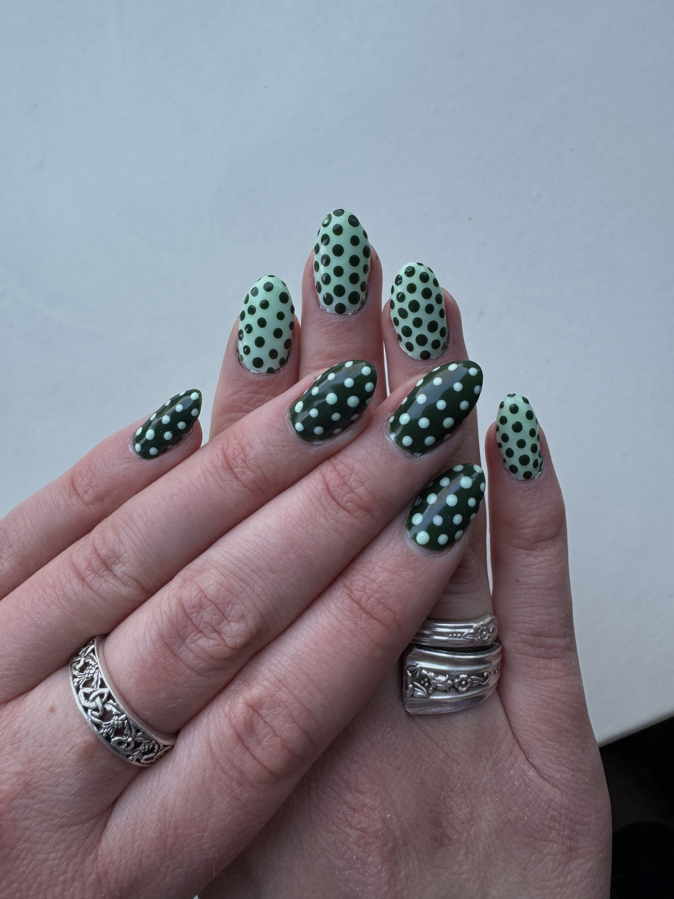
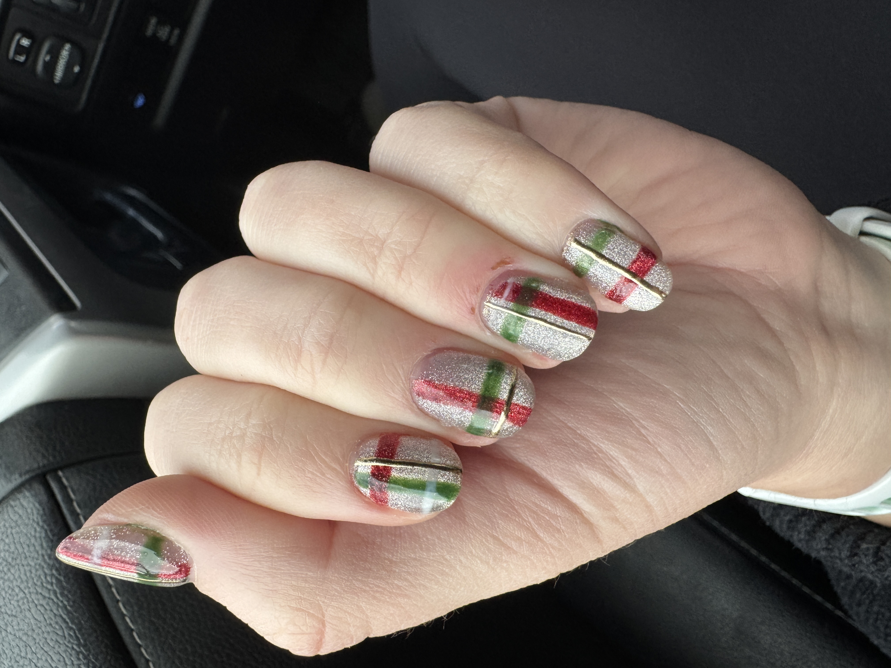
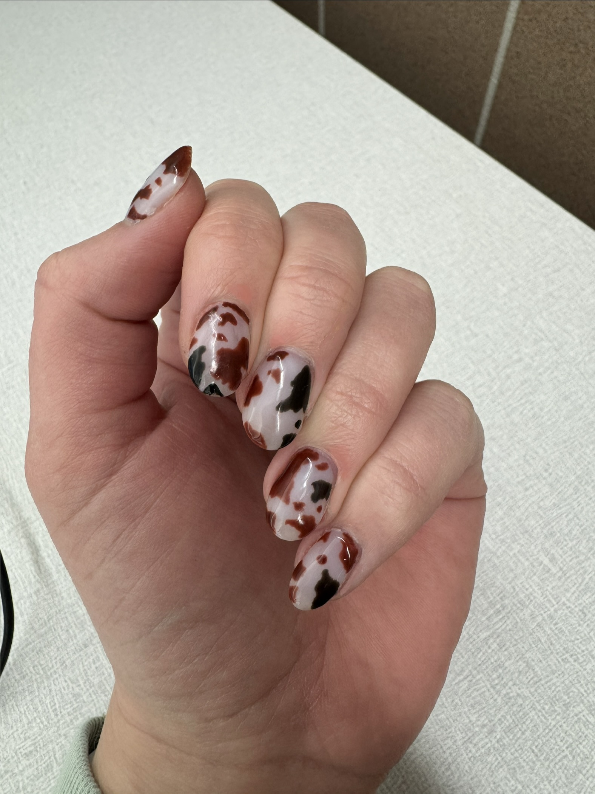
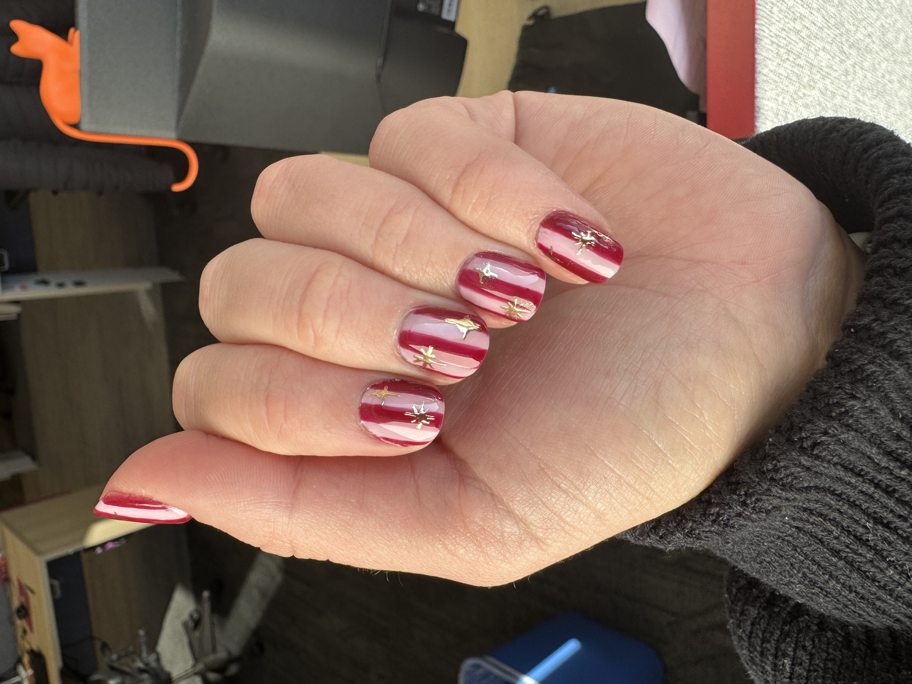
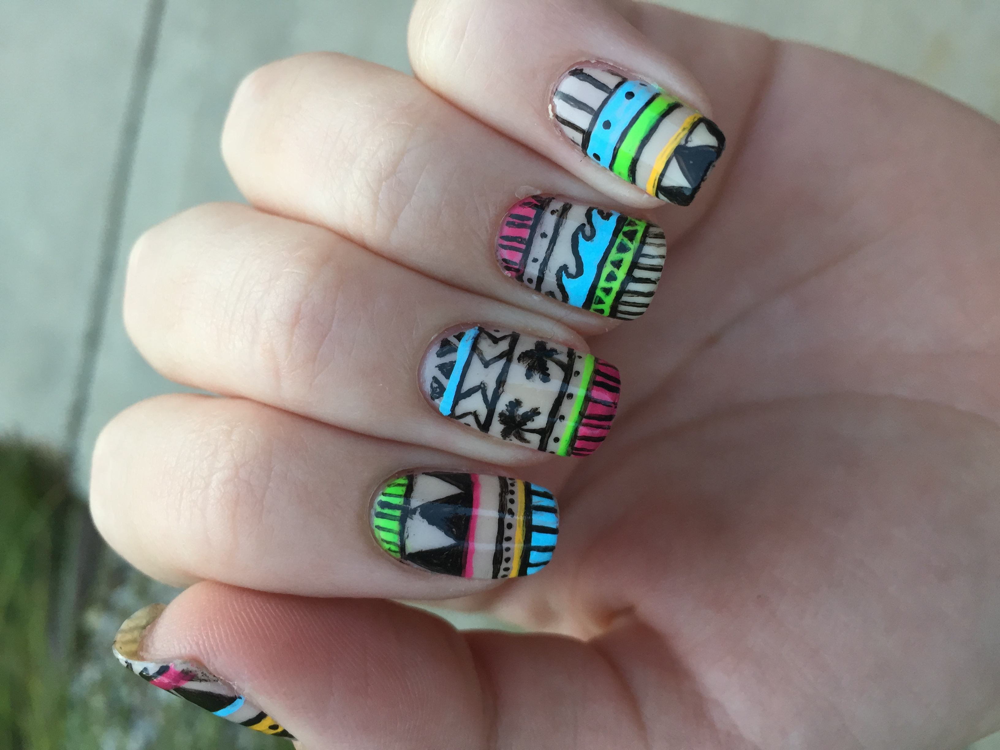
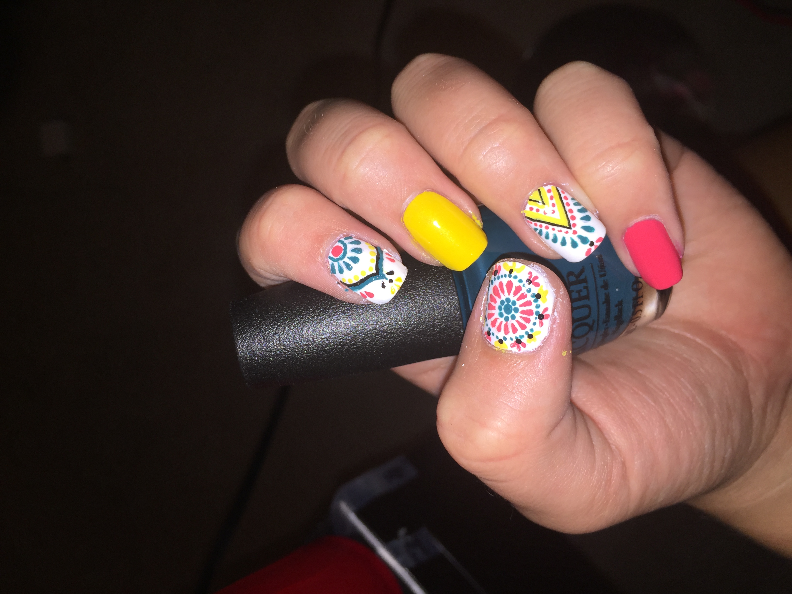
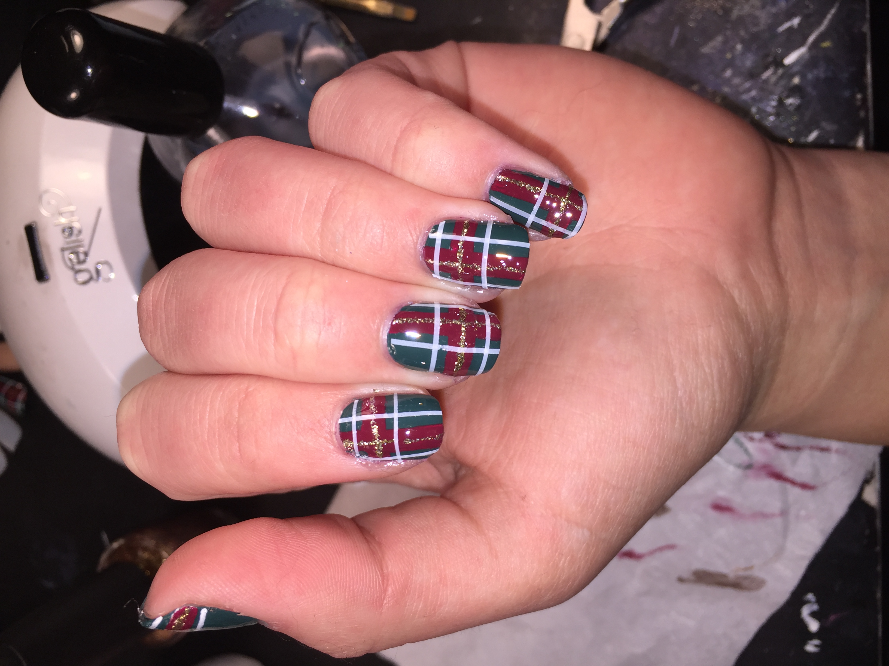
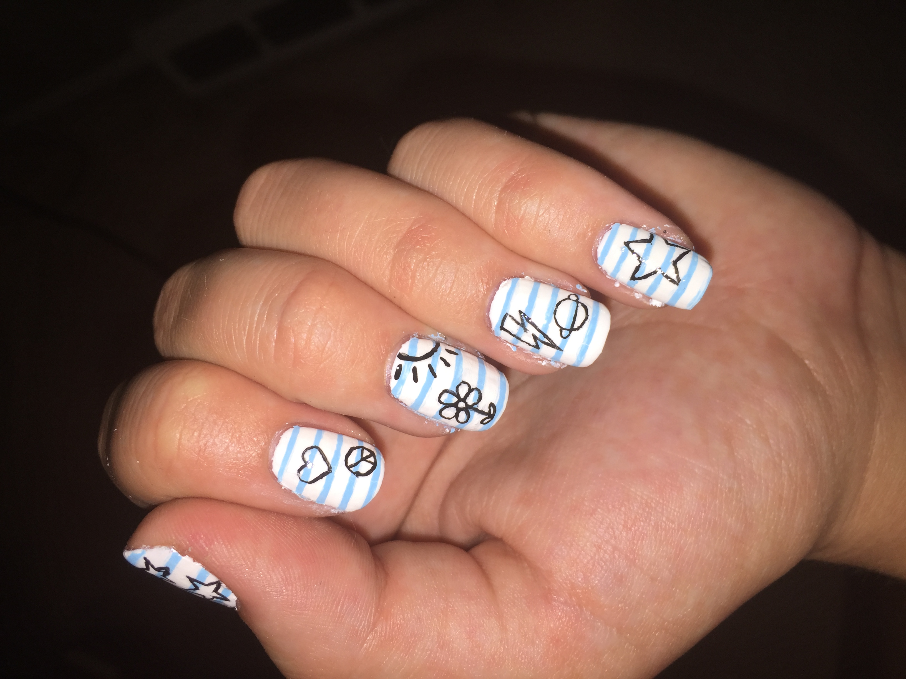

Nail Art
Nail art has been a creative outlet for me since I was about 12 years old, and it's become a surprisingly powerful way for me to stay up to date with visual trends. Treating my nails as wearable art pushes me to experiment with color, pattern, composition, and small-scale detail, all of which translate directly to my design work. It keeps me current with emerging trends in fashion, strengthens my attention to detail and patience, and gives me space to explore ideas hands-on (and on-hands!). Below are a few pictures of designs I've done that showcase these skills.










← Back to Home